Version control with git and GitHub
Git is a version control system that manages the evolution of a set of files, called a repository (repo), in a structured way (think of Word’s Track Changes). With git you can track the changes you make to your project/code. You will always have a record of what you’ve worked on and can easily revert back to an older version if you make a mistake. GitHub is a hosting service that provides a home for your git-based projects on the internet (think of Dropbox). In addition, GitHub offers functionality to use git online via an easy-to-use interface. Both git and GitHub can very easily be configured to work with RStudio.
Below are some key terms you will undoubtedly hear when delving into the git–GitHub world.
Repository (already mentioned) This where the work happens–think of it as your project folder. It should contain all of your project’s files etc.
Cloning A repository on GitHub is stored remotely in the cloud. To create a local copy of this repository you can clone it and use Git to sync the two.
Committing and pushing are how you can add the changes you made on your local machine to the remote repository in GitHub. You can make a commit when you have made milestone worthy changes to your project. You should also add a helpful commit message to remind future you, or your teammates, what the changes you made were (e.g., fixed the bug in my_function).
The table below gives Ten Simple Rules for Taking Advantage of Git and GitHub, which outline how to get the most out of using these softwares.
| Title | Why | |
|---|---|---|
| Rule 1 | Use GitHub to Track Your Projects | Keeps your work backed up and in order |
| Rule 2 | GitHub for Single Users, Teams, and Organizations | Flexible repo rights helps project management |
| Rule 3 | Developing and Collaborating on New Features: Branching and Forking | Easily copy and create your own version of a project to modify |
| Rule 4 | Naming Branches and Commits: Tags and Semantic Versions | Consistency helps your collaborators and end-users |
| Rule 5 | Let GitHub Do Some Tasks for You: Integrate | Continuous integration helps make sure your code is ready to go as soon as possible |
| Rule 6 | Let GitHub Do More Tasks for You: Automate | Automating tasks means less manual work and more reliable testing |
| Rule 7 | Use GitHub to Openly and Collaboratively Discuss, Address, and Close Issues | Promotes collaboration |
| Rule 8 | Make Your Code Easily Citable, and Cite Source Code! | Just overall good practice and aids reproducibility |
| Rule 9 | Promote and Discuss Your Projects: Web Page and More | Promoting your work is likely always good for your career |
| Rule 10 | Use GitHub to Be Social: Follow and Watch | GitHub is a nice way to follow developments in your field and see others work |
TASK Read Ten Simple Rules for Taking Advantage of Git and GitHub and briefly expand on the points above using examples from your studies/careers to-date.
Setting up
- Register an account with GitHub https://github.com. Choose the free option!
- Make sure you’ve got the latest version of
R
- Upgrade
RStudioto the new preview version (optional) - Install git: follow these instructions
- Get started
Cloning a repository from GitHub using RStudio
- In
GitHub, navigate to the Code tab of the repository and on the right side of the screen, clickClone or download. - Click the
Copy to clipboardicon to the right of the repository URL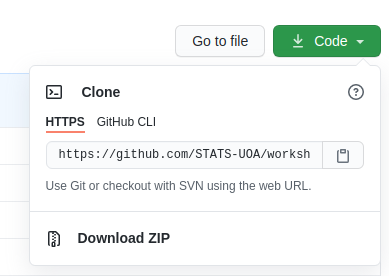
- Open
RStudioin your local environment - Click
File,New Project,Version Control,Git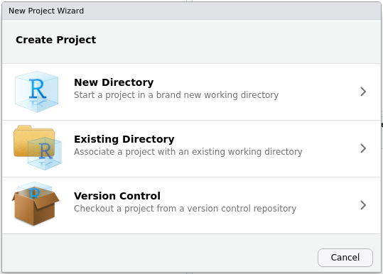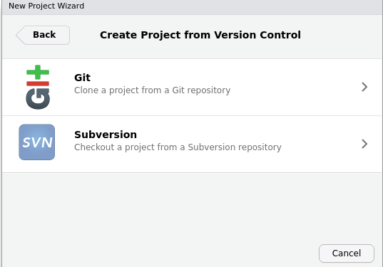
- Paste the repository URL and enter TAB to move to the
Project directory namefield.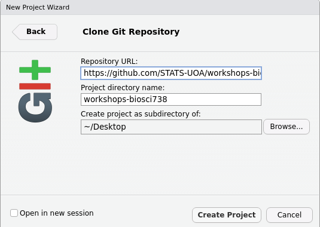
Create Project. Your Files pane should now look similar to this
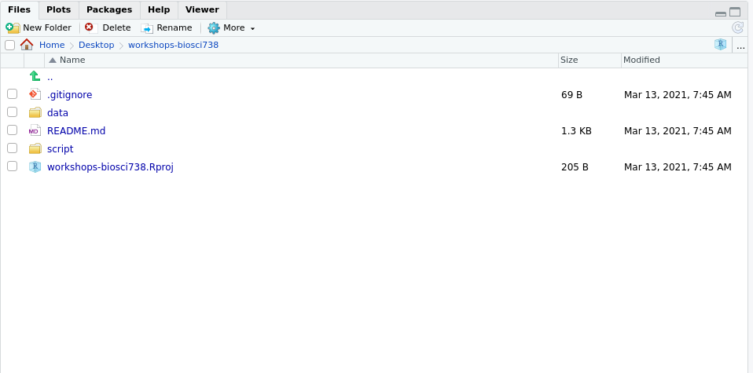
Commiting and pushing changes
- Open a file from your project directory (here I’ve opened the file
README.md). Note that theGitpane (top right) is empty
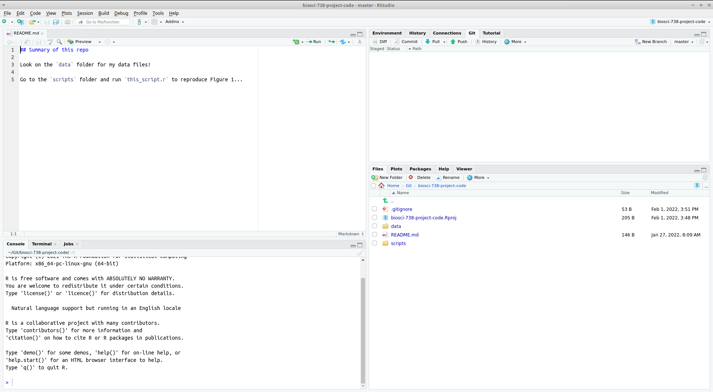
- Make a change to your file and save. Now note that the
Gitpane (top right) is not empty:
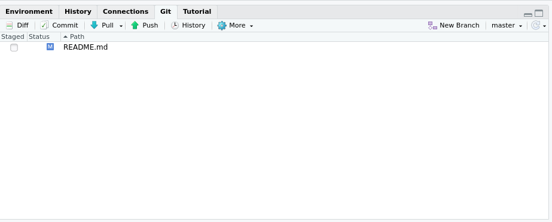
Check this file in the
Gittab (it is now staged for commit).Click the Commit button. A new pane will open. Changes made to the file will be highlighted (additions in green and deletions in red). Now write your self an informative message in the top right of this pop-up:
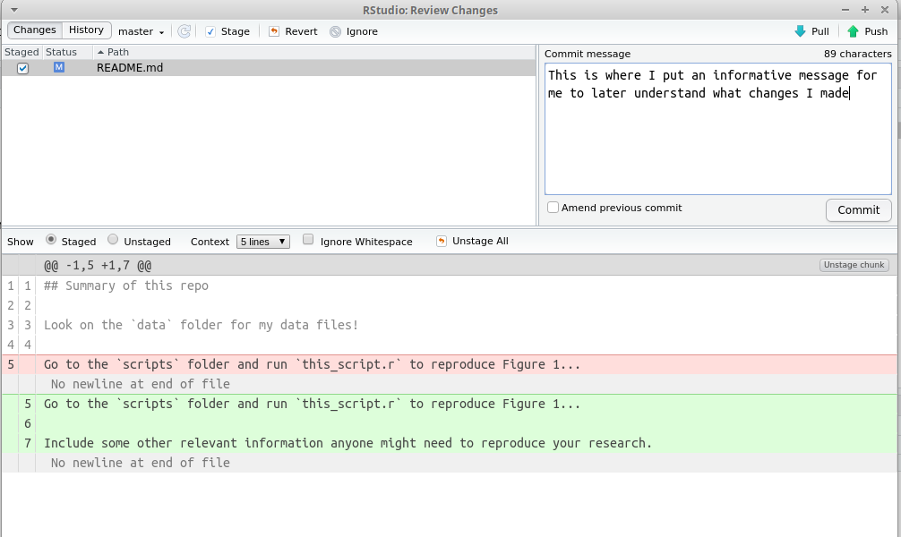
- Click the Commit button below the message you’ve just written. A new pop up will let you know how things are going! You can then close both popups.
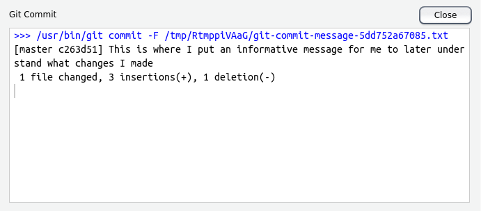
Now you’ll see RStudio has left you a little message in the
Gittab, something similar toYour branch is ahead of origin/master by 1 commit. This means that you’ve made and committed your changes locally (i.e., on your computer) but you are yet to push these changes to GitHub.To push to GitHub press the Push button,
A new pop up will let you know how things are going! You can then close this once it gives you the option to.
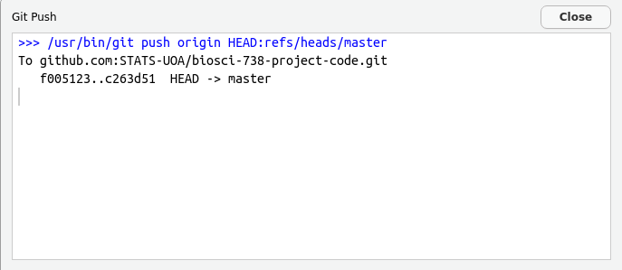
System specific hurdles
As with any new software there are likely to be a few teething issues! Below are some previous classmate’s solutions4 to issues encountered when commiting and pushing changes using git via RStudio. These initial issues are likely due to authentication.
Windows config file
Assuming your current working directory is at the top level of your repo/project then choose the Files tab in your plotting pane.
- Then choose the More tab and the Show Hidden Files option:
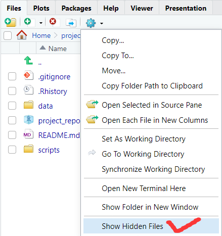
- Navigate to the
.gitfolder and open the file namedconfig:
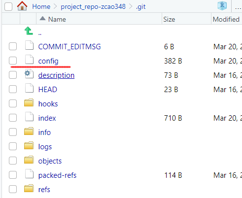
- Open
configand add the following code replacing the relevant bits with your GitHub username/handle and email.
[user]
name = <adding your GitHub username here>
email = <adding your GitHub email here>- Save the changes to this file and you should be all good to commit!
Personal Access Token authentication (linking GitHub to your project)
Using your Github email and password as authentication was decommissioned a while ago. Instead a Personal Access Token is required.
Sign into Github and follow these instructions to create a Personal Access Token
Once completed a new popup will appear with what looks like a random jumble of letters and numbers (in the format
ghp_*************), this is your Personal Access Token. Copy this! Or put it in your notes, or password manager, for laterReturn to RStudio clone your desired repository (e.g., the one for the assignment):
- Create a New Project
- Click on Version Control
- Click on Git
- Enter the URL from the repository link from Canvas
- Make a name for the project (or just use the default)
- Click Create
You will now be asked for your GitHub details:
- When asked for your username type your GitHub account username/handle
- When asked for your password, input the Personal Access Token you just created, not your GitHub account password
Note, depending on the choices you made when creating your Personal Access Token, it may run out (the default duration is 30 days) and your authentication stop working. No worries, simply create a new one one use this as your password!
Zhao Cao, Weiran Jin, and Jack Blackwood from the 2023 cohort↩